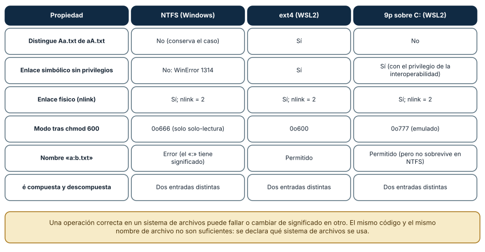
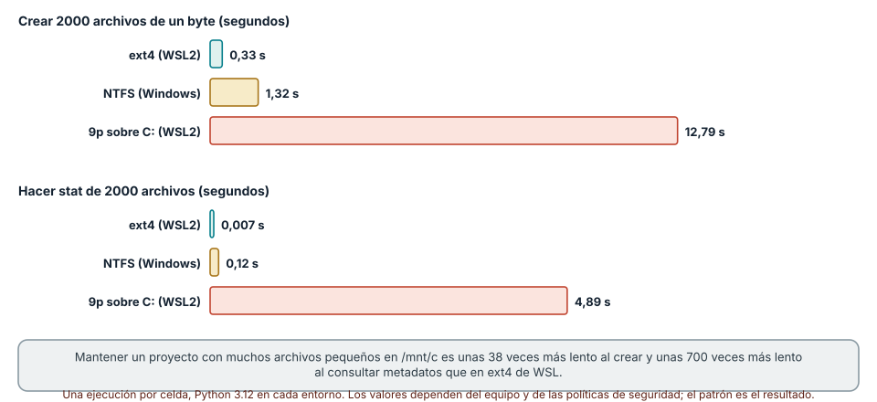
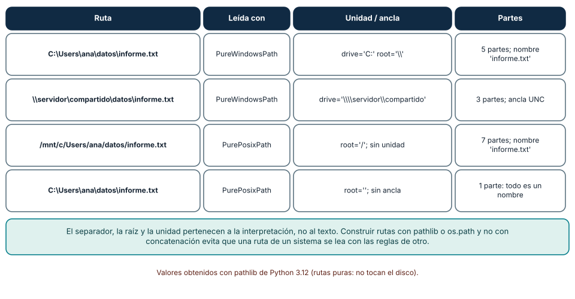

← SE-025 · ↑ Parte 02 · 📚 Índice completo · SE-027 →
Punto profesional y fundamento pedagógico
Punto profesional. La clase existe para razonar sobre identidad de archivos mediante rutas, enlaces, metadatos y resolución.
Por qué aparece aquí. Se sitúa después de Windows, Linux, macOS y sus modelos operativos y antes de Usuarios, grupos, permisos y elevación de privilegios: convierte el conocimiento anterior en una decisión observable que la clase siguiente podrá reutilizar. La continuidad se comprueba en el artefacto, no por compartir vocabulario.
Error conceptual que debe corregir. Equiparar nombre de ruta con identidad o tratar symlink como copia.
Secuencia de aprendizaje. Antes de leer la solución, el estudiante predice el resultado del caso normal y del error conceptual anterior. Luego explica un caso resuelto paso a paso, construye un contraejemplo que cambie la decisión y, sin consultar el texto, reconstruye el mecanismo y lo aplica a una entrada nueva. La secuencia usa predicción, explicación propia, contraste y recuperación. ICAP distingue participación de construcción de conocimiento; How People Learn II exige conectar conocimiento previo, contexto y transferencia; la práctica de recuperación respalda producir de nuevo la explicación tras una demora; y Education for Life and Work exige devolución que explique la causa del error.
Evidencia de aprendizaje. Filesystem-fixture.md con árbol temporal, enlaces, permisos y resolución paso a paso. Debe contener predicción previa, observación, explicación causal, contraejemplo, criterio de aceptación y una nota de qué dato haría cambiar la conclusión.
Límite de la conclusión. La semántica exacta depende del sistema de archivos y opciones de montaje.
Trazabilidad fuente → afirmación
| Fuente primaria u oficial | Afirmación que respalda | Lo que no prueba |
|---|---|---|
| The Open Group — Pathname Resolution | define el contrato portable de procesos, rutas, entorno o shell que se contrasta entre sistemas | No demuestra por sí sola que el artefacto del estudiante sea correcto. |
| Microsoft Learn — Naming Files, Paths, and Namespaces | documenta el comportamiento de Windows o PowerShell que se compara con el contrato POSIX | No demuestra por sí sola que el artefacto del estudiante sea correcto. |
| Python documentation — pathlib | define la semántica y los límites de la API de Python utilizada en el experimento | No demuestra por sí sola que el artefacto del estudiante sea correcto. |
Antes de empezar
El kit de diagnóstico multiplataforma ya sabe describir la plataforma. Su siguiente tarea parece trivial: encontrar config.json. En un equipo funciona con una ruta relativa; en otro, el proceso se inició desde un directorio diferente; en un tercero, la ruta cambia de mayúsculas y apunta a un enlace. La cadena de texto es parecida, pero la resolución no es la misma.
Resultado de aprendizaje
Al terminar podrás explicar cómo se resuelve una ruta, distinguir nombre, contenido y metadatos, y diseñar operaciones de archivo que sean explícitas, seguras y verificables.
Prerrequisitos
SE-025, distinción entre texto y bytes de SE-015, y una carpeta desechable. Debes poder identificar directorio de trabajo y plataforma sin elevar permisos.
Problema auténtico
El analizador local de eventos recibe config/event_analyzer.json y funciona solo cuando se inicia desde el repositorio. Un acceso directo, servicio o tarea usa otro directorio y resuelve la misma cadena hacia un objeto distinto. El error se atribuye al archivo, aunque cambió el contexto de resolución.
Objetivos observables
Podrás resolver rutas desde una base explícita; distinguir archivo, directorio y enlace; interpretar metadatos con límites; diseñar actualización segura; y demostrar por qué concatenar cadenas no modela un sistema de archivos.
Temas y por qué importan
| Tema | Mecanismo | Decisión habilitada |
|---|---|---|
| Espacio de nombres | vincula rutas con objetos | localizar sin depender de la sesión |
| Enlaces | introducen nombres alternativos y saltos | contener recorridos y limpiezas |
| Metadatos | describen tipo, tamaño, tiempos y acceso | contrastar hipótesis sin leer contenido |
| Actualización | combina apertura, escritura y reemplazo | evitar estados parciales |
Mapa conceptual
Ver la notación fuente del diagrama
flowchart LR
I[Ruta recibida] --> B[Base explícita]
B --> N[Normalización]
N --> L[Resolución de enlaces]
L --> M[Tipo y metadatos]
M --> O[Operación declarada]
O --> V[Verificación posterior]La cadena se interpreta antes de abrir. Normalizar no autoriza; resolver no garantiza existencia; abrir no garantiza durabilidad. Cada flecha añade una condición distinta.
Conceptos y decisiones
Un sistema de archivos crea un espacio de nombres sobre almacenamiento
El archivo que una aplicación percibe no es simplemente “un bloque del disco”. El sistema de archivos relaciona nombres con objetos, organiza directorios y conserva metadatos como tipo, tamaño, marcas temporales y permisos. El kernel traduce operaciones de alto nivel a la implementación montada y, finalmente, al dispositivo o servicio remoto.
La abstracción permite que distintas tecnologías presenten operaciones semejantes, pero no garantiza idénticas reglas de nombres, sensibilidad a mayúsculas, durabilidad o bloqueo.
Una ruta se interpreta desde un contexto
Una ruta absoluta parte de una raíz o volumen definido por la plataforma. Una ruta relativa parte del directorio de trabajo del proceso, no necesariamente del directorio donde está el script. Ese detalle causa muchos “funciona en mi máquina”.
Ver la notación fuente del diagrama
flowchart LR
A[Ruta recibida] --> B{¿Absoluta?}
B -- No --> C[Combinar con directorio base explícito]
B -- Sí --> D[Conservar raíz o volumen]
C --> E[Normalizar componentes]
D --> E
E --> F[Resolver enlaces según la operación]
F --> G[Comprobar tipo y metadatos]
G --> H[Abrir con modo declarado]Normalizar . y .. no prueba que el objetivo exista ni que esté permitido. Resolver una ruta es una operación semántica; concatenar cadenas con / o \ es apenas manipulación textual.
Windows y POSIX modelan raíces de forma diferente
En sistemas POSIX, / encabeza un árbol único donde pueden montarse otros sistemas. Windows admite volúmenes, rutas UNC y prefijos con reglas propias. Las bibliotecas de rutas de un lenguaje modelan estas diferencias mejor que separadores escritos a mano.
No todo nombre válido en una plataforma lo es en otra. Tampoco debe asumirse sensibilidad o insensibilidad a mayúsculas solo por el nombre del sistema: depende del sistema de archivos y su configuración. El kit de diagnóstico multiplataforma prueba el comportamiento que necesita o declara su requisito.
Enlace simbólico y enlace físico no son copias
Un enlace simbólico almacena una referencia que puede quedar colgante si cambia el objetivo. Un enlace físico agrega otro nombre a un mismo objeto subyacente y suele estar limitado al mismo sistema de archivos. Borrar un nombre no necesariamente borra los datos si quedan otros enlaces o descriptores abiertos.
Seguir enlaces automáticamente puede escapar del directorio esperado. Una herramienta que limpia archivos debe resolver y validar el destino antes de modificarlo; comparar prefijos de texto no basta frente a .., enlaces y diferencias de normalización.
Metadatos y contenido cambian de manera independiente
Tamaño, propietario, permisos y tiempos describen el objeto, pero sus significados y granularidad varían. Una marca de modificación no prueba quién cambió un archivo ni que el contenido sea distinto. Para verificar igualdad se puede comparar contenido o una función hash adecuada, considerando costo y amenaza.
Los atributos extendidos, listas de control de acceso y marcas de procedencia también pueden afectar la ejecución sin aparecer en una lectura básica. El kit de diagnóstico multiplataforma reporta los campos que sustentan una hipótesis y señala cuando la plataforma no ofrece equivalencia directa.
Abrir un archivo incluye decisiones de concurrencia y durabilidad
Leer, crear, truncar, agregar y reemplazar son modos distintos. Dos procesos pueden observar estados intermedios si una actualización se hace directamente sobre el archivo final. Un patrón común es escribir en un archivo temporal del mismo sistema, sincronizar cuando la garantía lo exige y reemplazar atómicamente; aun así, atomicidad y persistencia dependen del contrato documentado.
La especificación de POSIX y la documentación de nombres y rutas de Windows ofrecen los contratos que deben verificarse, no memorizarse por analogía.
Codificación del nombre no es codificación del contenido
Un nombre de archivo y los bytes guardados en él atraviesan capas diferentes. Poder abrir inscripción.txt no significa que el texto sea UTF-8; y decodificar el contenido no garantiza que dos formas Unicode del nombre se comparen igual. Esta separación recupera lo aprendido en SE-015.
Medir lo que un sistema de archivos promete
Los comportamientos de un sistema de archivos se averiguan con una prueba pequeña y repetible, no con la documentación de otro sistema. La prueba de esta clase crea un directorio desechable y comprueba, en cada sistema, seis propiedades: si distingue mayúsculas, si permite enlaces simbólicos y físicos, qué modo informa tras chmod 600, qué nombres admite y si trata como iguales dos formas Unicode de un nombre. Ejecutada con el mismo código de Python en tres lugares (NTFS desde Windows, ext4 dentro de WSL2 y el montaje 9p de la unidad de Windows visto desde WSL2), dio resultados distintos en casi todas las filas de la Figura 1.

Cómo leer la figura. NTFS *conserva* el caso pero no lo distingue, de modo que Aa.txt y aA.txt son el mismo archivo; ext4 sí los distingue. El enlace simbólico falla en NTFS sin el privilegio correspondiente (WinError 1314) y funciona en ext4. chmod 600 solo cambia el modo visible en ext4: en NTFS el modo es una aproximación (0o666) y en el montaje 9p es emulado (0o777). Los enlaces físicos funcionan en los tres con nlink = 2. Y las dos formas Unicode de «é» coexisten como entradas distintas en los tres: el sistema de archivos guarda los bytes del nombre sin unificar la normalización. Dónde deja de valer: son tres configuraciones concretas. NTFS puede marcar directorios como sensibles a mayúsculas (WSL lo usa), macOS (no ejecutado aquí) maneja la normalización de nombres de otra manera y los sistemas de red añaden semánticas propias; la regla es probar el sistema que realmente usas.
El costo de cruzar la frontera: metadatos y el montaje 9p
El tamaño de un archivo importa menos que el *número* de operaciones de metadatos. La misma prueba creó 2000 archivos de un byte y luego consultó stat de cada uno: en ext4 tardó 0,33 s y 0,007 s; en NTFS desde Windows, 1,32 s y 0,12 s; y en /mnt/c desde WSL2, 12,79 s y 4,89 s. Cada operación de metadatos que cruza de Linux a Windows pasa por el protocolo 9p y por el sistema de archivos de Windows: la consulta de metadatos fue unas 700 veces más lenta que en ext4. La consecuencia práctica es que un proyecto con miles de archivos pequeños (un árbol de dependencias, un repositorio) debe vivir en el sistema de archivos del entorno donde se ejecuta.

Cómo leer la figura. Hay dos paneles: crear archivos y consultar su estado. Las barras rojas son el montaje 9p, que tiene el peor comportamiento en ambos. Dónde deja de valer: es una ejecución única de una carga sintética en un equipo, con el antivirus y las políticas que tenga. Lo que se conserva es el patrón (el costo por operación de metadatos domina) y el procedimiento de medición; para decidir, repite varias veces y mide tu carga real.
Rutas: texto, anclas y normalización
Una ruta es texto que cada sistema interpreta con sus reglas. pathlib lo hace visible con sus clases «puras», que no tocan el disco: PureWindowsPath(r"C:\Users\ana\datos\informe.txt") tiene unidad 'C:', raíz '\\' y cinco partes; la misma cadena leída con PurePosixPath *no tiene ancla* y es una sola parte, un único nombre de archivo que contiene barras invertidas; una ruta UNC (\\servidor\compartido\...) tiene como «unidad» el par servidor-recurso. La conclusión es que concatenar cadenas con un separador manual mezcla las reglas de dos sistemas.

Cómo leer la figura. Cada fila muestra la misma idea con una interpretación distinta. La última fila es la más reveladora: una ruta de Windows leída con las reglas de POSIX no es una ruta de varias partes, sino un nombre extraño. Dónde deja de valer: las clases puras no consultan el disco, de modo que no resuelven enlaces simbólicos ni diferencias de mayúsculas; para eso se usan resolve() y las operaciones reales del sistema. Y la normalización de rutas (.., .) puede cambiar el significado cuando hay enlaces simbólicos de por medio, por lo que no es un control de seguridad suficiente por sí sola.
Definiciones de trabajo
- ruta: expresión interpretada bajo reglas y una base;
- entrada de directorio: asociación entre un nombre y un objeto del sistema de archivos;
- resolución: proceso de recorrer componentes, montajes y enlaces;
- metadatos: propiedades del objeto distintas de su contenido principal;
- reemplazo atómico: transición indivisible para observadores según garantías del sistema concreto.
Caso conductor: el kit de diagnóstico multiplataforma localiza la configuración
El kit de diagnóstico multiplataforma define tres ubicaciones: directorio del programa, directorio de configuración del usuario y directorio de trabajo. Nunca las trata como sinónimos. Recibe una opción explícita --config; si no existe, consulta una variable documentada; por último usa una ubicación predeterminada de la plataforma.
Antes de abrir informa: ruta proporcionada, base utilizada, ruta normalizada, existencia, tipo de objeto y si atraviesa un enlace. No imprime el contenido porque puede contener secretos. Si encuentra un directorio donde esperaba un archivo, falla con un mensaje específico y un código distinto de “no existe”.
El mecanismo evita una trampa: cambiar automáticamente a cualquier archivo de nombre parecido haría que el programa “funcione” con configuración equivocada.
Práctica guiada
- Crea un árbol de laboratorio con archivo, subdirectorio, ruta con espacios y enlace simbólico si la plataforma lo permite.
- Ejecuta la misma resolución desde dos directorios de trabajo.
- Registra ruta textual, ruta resuelta, tipo, tamaño y permisos observables.
- Diseña una escritura segura: temporal, validación y reemplazo.
- Prueba los fallos
ausente,tipo incorrecto,sin permisoyenlace fuera del árbolsin usar datos reales.
Entrega una matriz donde cada observación conduce a una decisión, no una colección de comandos.
Ejemplo mínimo
Desde C:\lab\event_analyzer, config\event_analyzer.json apunta al laboratorio. Desde C:\Users\ana, la misma cadena apunta a otra ubicación. Resolver desde el directorio del programa produce una intención distinta a resolver desde el directorio de trabajo; el kit de diagnóstico multiplataforma debe nombrar cuál eligió.
Ejemplo profesional
Un actualizador escribe sobre el archivo final y se interrumpe, dejando JSON truncado. El equipo cambia a temporal en el mismo volumen, valida el contenido y reemplaza según la garantía documentada. Mantiene copia o recuperación porque atomicidad no equivale a persistencia ante toda falla.
Ejercicios
- Predice el resultado de tres rutas relativas bajo dos directorios de trabajo.
- Explica cómo un enlace puede escapar de un árbol aunque la cadena inicial comience dentro.
- Diseña casos para archivo ausente, directorio inesperado y nombre Unicode normalizado de manera distinta.
Reto verificable
Construye un resolvedor de solo lectura que produzca ruta de entrada, base, ruta final, tipo y límite. Debe rechazar de forma explicable un enlace que salga del laboratorio.
Preguntas frecuentes
¿Una ruta absoluta siempre es segura?
No. Puede apuntar fuera del alcance, atravesar enlaces o pertenecer a un recurso remoto; solo elimina una ambigüedad de base.
¿Comparar hashes demuestra que dos archivos son legítimos?
Demuestra igualdad respecto de la función y bytes comparados, no procedencia ni autorización.
¿Por qué mi repositorio falla al clonarlo en Windows si funciona en Linux?
Una causa frecuente es que el repositorio contiene dos archivos cuyos nombres difieren solo en mayúsculas (por ejemplo, Readme.md y README.md). En un sistema que distingue mayúsculas ambos coexisten; en NTFS, uno sobrescribe al otro o el cliente avisa. Otras causas son nombres con caracteres no válidos en Windows (como :), enlaces simbólicos sin el privilegio necesario y rutas muy largas. Comprueba estas hipótesis antes de culpar a la herramienta.
¿Un enlace simbólico es una copia?
No. Un enlace simbólico es un archivo pequeño que *contiene una ruta* y se resuelve al abrirlo; si el destino cambia o desaparece, el enlace se rompe. Un enlace físico es un segundo nombre para el *mismo contenido* (nlink = 2); borrar uno no borra los datos mientras quede el otro. Ninguno es una copia: cambiar el contenido por uno se ve por el otro.
¿Puedo confiar en os.path.abspath para validar que un archivo está dentro de un directorio?
No como defensa única. Normaliza la ruta, pero no resuelve enlaces simbólicos ni comprueba el sistema de archivos. Para limitar un directorio de trabajo usa Path.resolve() y comprueba is_relative_to, y trabaja solo en directorios propios, tal como hace la limpieza segura del laboratorio.
Fallo controlado y diagnóstico
Inicia el kit de diagnóstico multiplataforma desde otro directorio y conserva una ruta relativa. Registra el objeto incorrecto, cambia a una base explícita y repite. La corrección debe explicar el contexto; no codificar una ruta personal absoluta.
Una segunda práctica reproduce una colisión de mayúsculas. En ext4 de un entorno de práctica crea Informe.txt y informe.txt con contenido distinto y comprueba que son dos archivos; copia ambos a un directorio de NTFS (por ejemplo, bajo /mnt/c o desde una herramienta de Windows). Síntoma esperado: el segundo sobrescribe al primero o la herramienta informa un conflicto. Causa: el destino no distingue mayúsculas. Corrección: el contrato de nombres prohíbe pares que difieran solo en el caso y una comprobación automática (por ejemplo, comparar name.casefold()) lo verifica antes de empaquetar. Registra el sistema de archivos de origen y de destino en observations.md.
Errores comunes y cómo corregirlos
| Síntoma | Causa conceptual | Corrección |
|---|---|---|
| El archivo se busca en lugares distintos | Se confundió directorio del script con directorio de trabajo | Elegir una base explícita y mostrarla en diagnóstico |
Una ruta portable se construye reemplazando / | Se trataron rutas como cadenas | Usar la biblioteca de rutas y probar raíces, volúmenes y UNC |
| La limpieza borra fuera del directorio | Se validó un prefijo textual antes de resolver enlaces | Resolver, comparar objetos/caminos canónicos y negar ambigüedad |
| Una actualización deja JSON incompleto | Se escribió directamente sobre el destino | Escribir, validar y reemplazar con la garantía documentada |
| Dos nombres visualmente iguales no coinciden | Se ignoró normalización Unicode o reglas del sistema | Registrar unidades exactas y evitar renombrados automáticos destructivos |
Entorno y archivos clave
El laboratorio compartido crea sus pruebas de case sensitivity y enlaces dentro de un hijo temporal del workspace y lo limpia; revisa por qué un resultado negativo describe capacidad efectiva, no una ley universal del filesystem.
Carpeta work/SE-026/ con config/, enlaces de laboratorio y contenido ficticio; path-report.json, write-plan.md. No uses directorios del sistema.
Seguridad, ética y accesibilidad
No sigas ni borres enlaces fuera del laboratorio. Redacta rutas personales. Ofrece rutas copiables y mensajes que no dependan solo de color o iconos.
Puente hacia el trabajo con agentes
Un agente que trabaja sobre un repositorio en /mnt/c desde WSL2 hereda el costo de la figura 2: operaciones como listar el árbol, buscar texto o ejecutar las pruebas pueden ser decenas de veces más lentas y agotar el presupuesto de tiempo de una tarea. El *harness* debe declarar en qué sistema de archivos vive el proyecto y preferir el del entorno que ejecuta. Por otro lado, las herramientas de edición de un agente deben respetar nombres, mayúsculas, finales de línea y enlaces; una operación «segura» en un sistema (renombrar a un nombre que solo difiere en el caso) puede destruir datos en otro. La comprobación de rutas con resolve() es también la defensa para que un agente no escriba fuera del directorio acotado. Las partes de seguridad agentic retoman ese control.
Transferencia
Compara un volumen local con una carpeta sincronizada o montaje de red. Enumera qué garantías de bloqueo, tiempo y disponibilidad no puedes trasladar.
Evaluación y evidencia
Se aprueba con resolución reproducible, cuatro fallos controlados, política de escritura razonada y reversión limpia. Una lista de separadores de ruta no es evidencia suficiente.
Criterio de cierre
Puedes predecir desde qué base se resuelve una ruta, explicar enlaces y metadatos, demostrar fallos controlados y justificar una política de lectura/escritura para el kit de diagnóstico multiplataforma en las tres familias de sistema.
Límites y siguiente paso
No cubrimos recuperación forense, sistemas distribuidos ni todas las garantías de cada sistema de archivos. Una ruta resoluble todavía puede estar prohibida. La próxima clase incorpora identidad, grupos, permisos y elevación para explicar esa decisión.
Fuentes
- The Open Group — Pathname Resolution — define el contrato portable de procesos, rutas, entorno o shell que se contrasta entre sistemas.
- Microsoft Learn — Naming Files, Paths, and Namespaces — documenta el comportamiento de Windows o PowerShell que se compara con el contrato POSIX.
- Python documentation — pathlib — define la semántica y los límites de la API de Python utilizada en el experimento.
- Apple Platform Deployment — File system basics — delimita el contrato técnico que debe cumplirse al razonar sobre identidad de archivos mediante rutas, enlaces, metadatos y resolución.
- Comparación de sistemas de archivos de Windows y Linux en WSL: recomienda dónde guardar los archivos y explica el rendimiento al cruzar sistemas; respalda la figura 2.
- Python
pathlib: rutas puras y concretas con sus anclas; usado en la figura 3. - path_resolution(7): cómo Linux resuelve nombres, directorios y enlaces simbólicos.
Glosario
- Directorio de trabajo: base que el proceso usa para interpretar rutas relativas.
- Enlace simbólico: objeto que referencia otra ruta y puede quedar sin destino.
- Metadatos: información que describe un objeto sin ser su contenido principal.
- Ruta canónica: representación resuelta bajo reglas concretas; no implica autorización.
- Volumen: unidad lógica con espacio de nombres y sistema de archivos asociados.